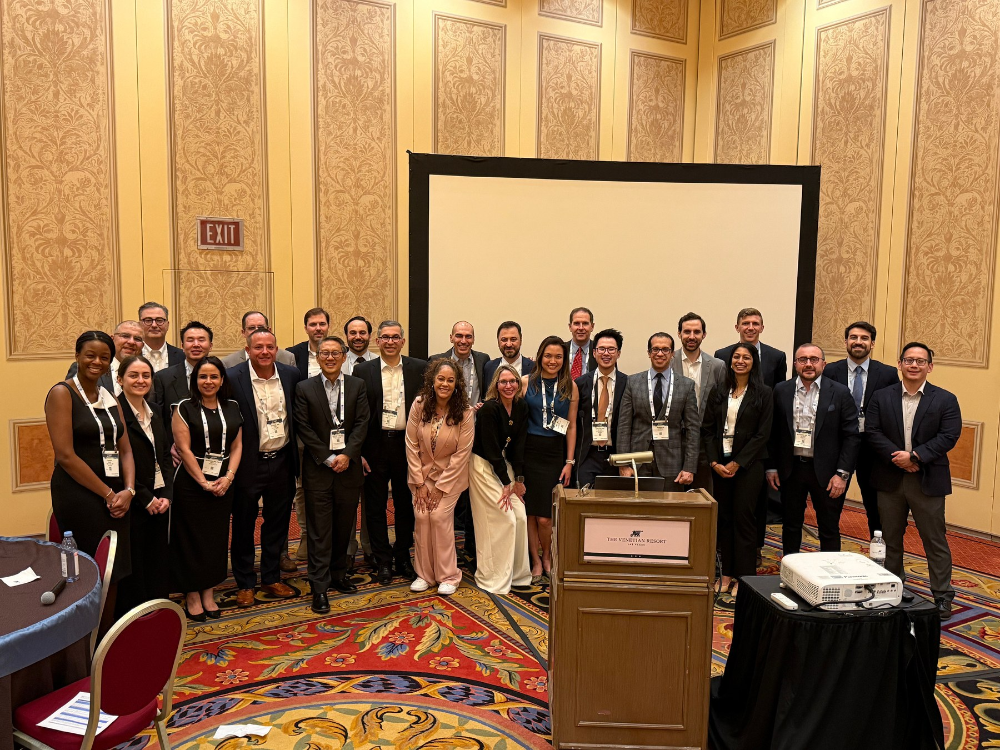
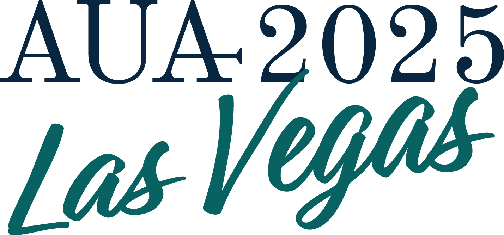

SP Radical Prostatectomy
Transvesical, extraperitoneal, and customized radical prostatectomy approaches.
Multi-Institutional Registry on Single Port Robotic Surgery
SPARC connects high-volume centers to build evidence for single-port robotic surgery across prostate, kidney, bladder, upper-tract malignancies, and reconstructive urology.
The SPARC network brings together actively contributing institutions through shared project review, prospective data capture, and collaborative authorship.
SPARC is maintained through institutional IRB approval, data use agreements, and prospective REDCap follow-up across a growing network of single-port robotic surgery programs.
Transvesical, extraperitoneal, and customized radical prostatectomy approaches.
Transvesical simple prostatectomy, STEP, discharge, retention, and trifecta outcomes.
Low anterior access, flank, retroperitoneal, and transperitoneal kidney surgery.
Single-port upper-tract cancer workflows and ROBUUST collaborative comparisons.
Emerging multi-institutional experience in bladder cancer and urinary diversion.
Reconstructive urology, transplant ureter reconstruction, and selected unique indications.
Upcoming events
SPARC activity at AUA includes formal abstract presentations and a separate dinner meeting. The Cleveland Clinic Single Port Robotic Symposium follows in October.
Seventeen SPARC abstracts across formal AUA sessions in Washington, DC.
Marquis Ballroom Salon 4, Marriott Marquis Hotel. Dinner invitations have been sent by email.
InterContinental Hotel, Cleveland Clinic. RSVP required.
Formal AUA presentations run Friday through Sunday. The SPARC dinner will feature five Best of SPARC abstracts with short presentations and live voting.
Predictors of same-day discharge trifecta following SP transvesical robotic simple prostatectomy
Perioperative complications of low anterior access SP retroperitoneal partial nephrectomy versus multi-port partial nephrectomy
Incisional hernia and abdominal wall bulge after low anterior access SP retroperitoneal partial nephrectomy
SP robotic nephroureterectomy: multi-institutional experience from SPARC
Perioperative and trifecta outcomes of SP transvesical robotic simple prostatectomy
Influence of surgical volume on adverse outcomes of SP robotic radical prostatectomy
Positive surgical margins and biochemical recurrence after SP robot-assisted radical prostatectomy
Low anterior access SP retroperitoneal partial nephrectomy versus transperitoneal multi-port approach
Trifecta outcomes of low anterior access SP retroperitoneal robotic partial nephrectomy
SP versus multi-port robotic nephroureterectomy with ROBUUST and SPARC collaboration
Multi-institutional learning curve of SP transvesical robotic simple prostatectomy
International Delphi consensus on SP robotic radical prostatectomy
SP transvesical versus extraperitoneal robotic radical prostatectomy
Transperitoneal versus retroperitoneal SP robotic nephroureterectomy
SP robotic radical cystectomy: multi-institutional experience from SPARC
LAA SP retroperitoneal partial nephrectomy for anterior versus posterior tumors
MAP score and surgical complexity in SP robotic partial nephrectomy
Five selected abstracts with short dinner presentations and live voting.


A working forum for SPARC collaborators to discuss active projects, abstracts, and the next phase of single-port urology research.
Hosted at the InterContinental Hotel Cleveland Clinic with more than 150 national and international delegates and more than 50 faculty members and proctors.
Marquis Ballroom Salon 4, Marriott Marquis Hotel, Washington, DC. Dinner invitations have been sent by email.
Recent work spans prostate, kidney, thromboembolic outcomes, survey research, and multi-institutional comparisons across single-port approaches.
Search SPARC on PubMedThe current pipeline spans prostate, kidney, bladder, upper-tract, anesthesia, and technical video workstreams.
Predictive value of MAP score compared with PADUA and RENAL.
Lead author: Abdulrahman Al-Bayati, MDComparing LAA retroperitoneal SP surgery with multi-port transperitoneal approaches.
Lead author: Abdulrahman Al-Bayati, MDEvaluating association with biochemical recurrence in SP prostatectomy.
Lead author: Abdulrahman Al-Bayati, MDConsensus development for single-port prostatectomy practice.
Lead author: Nicolas A. Soputro, MDMulti-institutional outcomes for transvesical robotic simple prostatectomy.
Lead author: Nicolas A. Soputro, MDEmerging bladder cancer experience across participating SPARC sites.
Multi-institutional data callStep-by-step technical description and clinical outcomes video manuscript.
Lead author: Nicolas A. Soputro, MDEvaluating how experience influences perioperative and oncologic outcomes.
Lead author: Nicolas A. Soputro, MDHow to join SPARC
Maintain an active IRB at the home institution.
Complete a data use agreement with the host institution.
Support prospective REDCap maintenance and follow-up.
Submit project proposals for data host and steering committee review.
SPARC brings together expert single-port robotic surgeons within the United States through a shared registry, collaborative project review, and academic authorship.
Pioneered by Dr. Jihad Kaouk of the Cleveland Clinic, the collaborative group has been responsible for multiple peer-reviewed publications, international academic conference presentations, and surgical teaching initiatives.